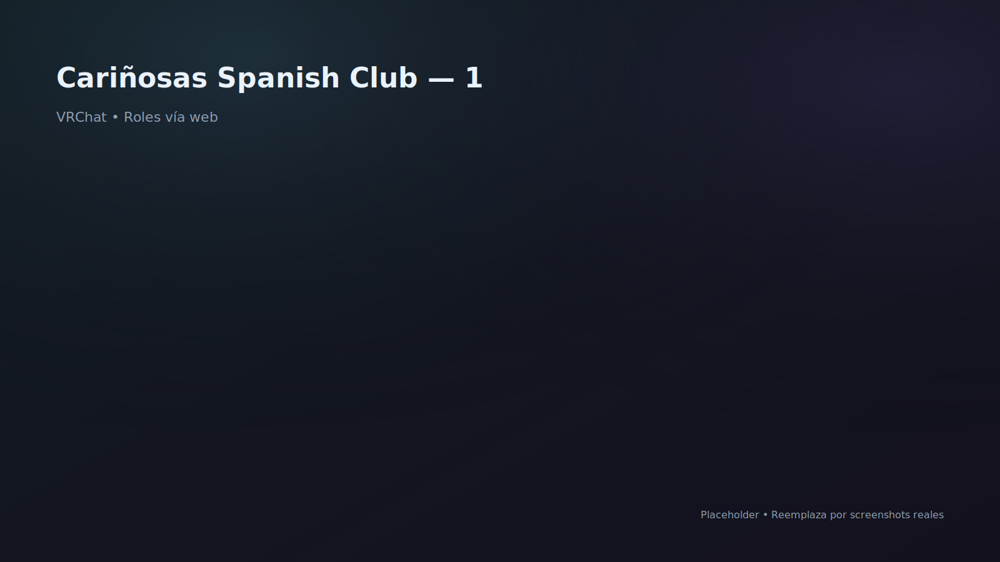

Proyecto VRChat
Nightlife / Dance Venue
Publicado 2023 · Updates 2025
Cariñosas Spanish Club
Club de baile hispanohablante donde introduje el salto a sistemas “remotos”: con refresco periódico para actualizar accesos en tiempo real, sistema de para actualizar enlaces sin rebuild, y (PC/Quest) con resoluciones distintas. El proyecto fue transferido a otra cuenta para operación/gestión posterior.

Aportes y responsabilidades
- Implementación del sistema de URL con ciclo de refresco para permisos/roles en tiempo real.
- Sistema DownloadString para actualización de enlaces y configuración sin rebuild.
- Descarga diferenciada de imágenes PC/Quest (resoluciones por plataforma) para posters/medios.
- Diseño de venue para baile: layout, puntos focales y lectura social.
- Transición/entrega del mundo a otra cuenta para operación posterior.
Notas / enlaces
Sistemas y código desarrollados
Introducido aquí:
Permisos/roles por URL (realtime)
Ciclo de refresco para actualizar accesos sin rebuild.
DownloadString para enlaces
Actualiza URLs y configuración en vivo (dependiendo del uso).
Imágenes PC/Quest (resolución por plataforma)
Descarga de posters/medios con variantes según plataforma.
Operación de venue
Diseño pensado para eventos, convivencia y flujo de usuarios.
Base para sistemas actuales
La mayoría de estos sistemas evolucionaron y se reutilizaron en proyectos posteriores.